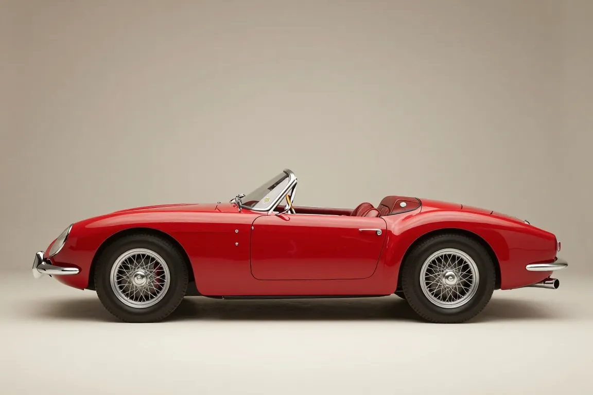

fashion · 1947–1972 · also: Italian GT, Berlinetta, Carrozzeria GT
The lean coupe for long, fast journeys. A low body of hand-beaten aluminium, thin pillars, a long bonnet and wire wheels. The cabin has leather, a wood-rim wheel and round gauges.

Core thesis
A fine car is a sculpture that has a purpose. A taut, light body with no extra line, made by a carrozzeria around a fast engine.
Design principles
Keep the body low, with a roof height of 1.25 to 1.35 m.
Make the overhangs short, and hold a long bonnet over a front engine.
Beat the body from aluminium sheet by hand over a wood buck, and fit it to a light tube frame.
Use thin roof pillars and a large glass area, so that the cabin looks like a bubble.
Limit chrome to a thin line: a grille, a bumper blade and the door handles.
Fit wire wheels with a knock-off hub, and leave the arches clean.
Trim the cabin in leather, with a wood-rim steering wheel and round, deep-set gauges.